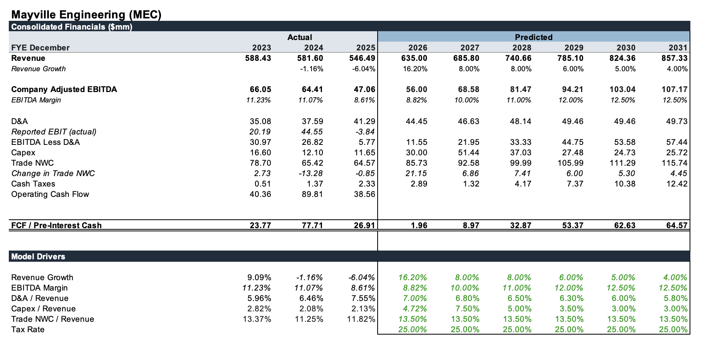
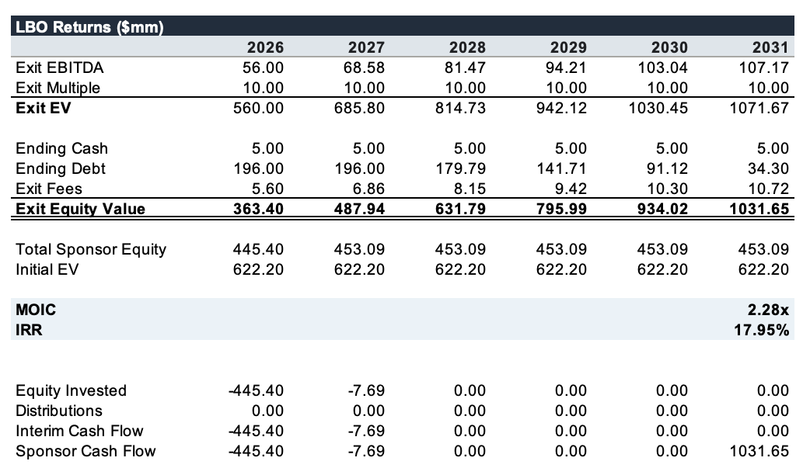

Evaluating Data Center Infrastructure Manufacturers as Take-Private Targets
Mayville Engineering Company (MEC). I’m currently in the thick of recruiting season but have seen a general trend among Industrials bankers I’ve talked to – anything related to Data Centers is a hot spot for M&A activity. Why mine gold when you can sell the shovel?
This post will be a short LBO on Mayville Engineering Company. MEC is a traditional industrial manufacturing company transforming into a supplier of infrastructure for AI data centers. It has a taken some serious steps to do so:
In July of 2025, it acquired Accu-Fab to enter the Data Center and critical power markets, reducing its reliance on cyclical agriculture, trucking, and construction.
In May of 2026, William Blair led a $100M equity offering, helping MEC raise capital to reduce debt and fund more manufacturing capacity.
This October, MEC acquired a 138,000 square foot facility in Thompson, Georgia, in order to expand production for data centers and critical power customers. For MEC Demand is exceeding capacity, and buying a facility is cheaper than building from scratch.
I have no time due to recruiting but thought I’d take a quick look at whether MEC’s transformation from cyclical metal fabrication to Data Center infrastructure could justify a higher valuation. A key risk is that MEC’s 8.1% Q2 adjusted EBITDA margin and negative FCF suggested the growth hadn’t yet translated into substantially better economics, even after the Accu-Fab acquisition. The market has not processed the change as well – MEC is down 20% YTD and down 5% in the last month.
MEC’s Transformation thesis presents an interesting potential LBO opportunity. The company is moving away from Cyclical industrial end markets toward data center and critical power infrastructure, where demand is growing rapidly. In Q2 of 2026, Mec Generated $29 in Datacenter & Critical Power revenue, up 477% YoY.
The question is whether this growth can translate into higher FCF. While MEC’s recent investments have expanded capacity, they have also increased capital requirements. For a sponsor, the challenge is underwriting this transition without assuming that Data Center growth will automatically produce better economics.
LBO Assumptions
For this quick model, I have 3 toggle cases, largely based on the historial 5 year average of earnings. All three cases rest on changes in Data Center demand and capital requirements. I'll evaluate returns under different entry and exit EBITDA multiples, with particular attention to the relationship between margin improvement, free cash flow generation, and debt paydown. I use management guidance as base case as well.
The more interesting variable is CapEx. MEC is investing aggressively to expand capacity, which constrains near-term free cash flow despite revenue growth. My model assumes capital intensity gradually declines as these investments begin generating returns.

I modeled an entry value of approx $623, assuming a 30% premium to a $15 reference share price. Financing includes $196M of debt at 3.5x EBITDA with an assumed 8.43% rate. 8.5% is from a combination of 8% and 11% interest debt mix.
Using 10x exit multiple, the base case generates approximately 18% IRR and 2.28 MOIC over five years. EBITDA grows from $56M to $107, while debt declines to $34M.

The transition requires cash upfront. Returns depend on margins improving and CapEx declining as new capacity ramps. The downside cases span 4.7% IRR to 25.1%.
My main takeaway is that selling shovels in AI can be capital intensive. MEC illustrates that: it’s 173% organic growth in data-center and critical power sales was supplemented with $50M of additional investment across 2026-2027.For a sponsor, the key question is how much cash is actually generated for each dollar of data-center driven growth.